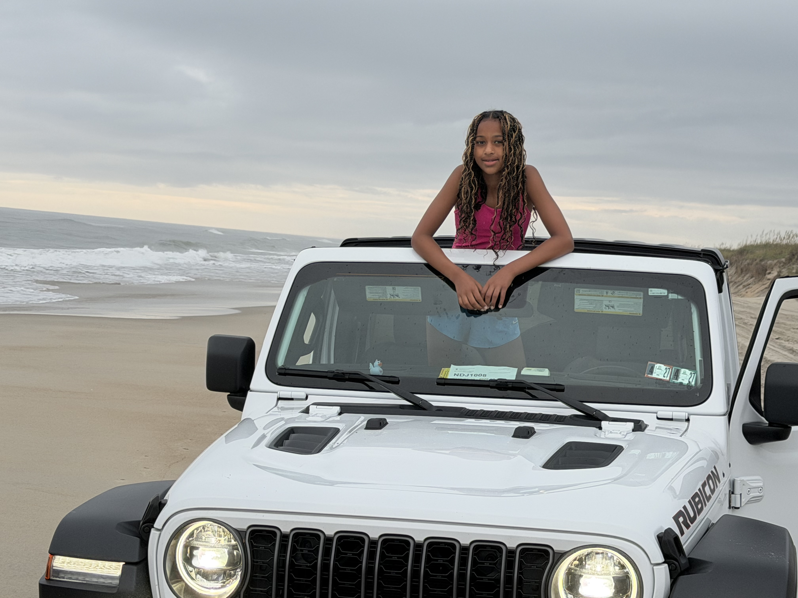
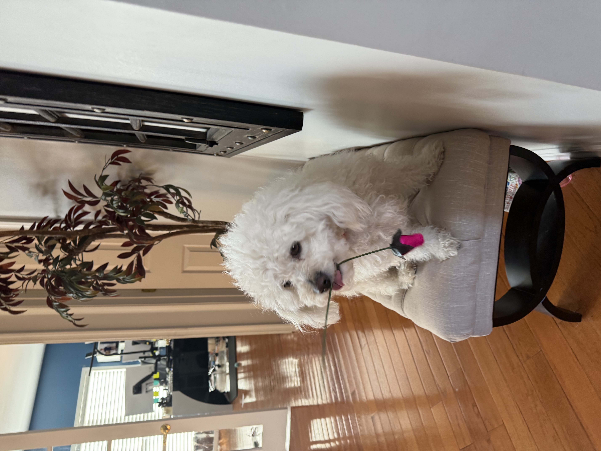
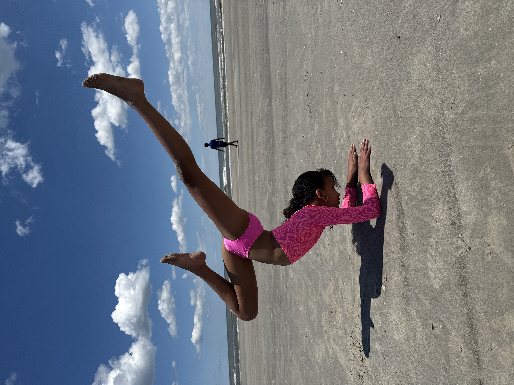

Soccer is my primary sport and I like watching the US womans national team. My favorite soccer players on that team are Allisa Thompson, Sophia Willson, Trinity Rodman, and Naomi Girma. I also play club soccer myself and have a travel team named FC Ballyhoo. I am 11 years old, am number ten, and play 9v9. We are a pretty good team.

I love going to the beach. It is relaxing and enjoyable. This summer my family and relatives went to the beach and we had a blast. the place we went to is outer banks and we also went jetsking. My dad drove me and we went super fast I was really scared but at the end of the day, it was really fun!

I love pets so much. They are cute, friendly, and fun to play with. I have a pet named grasie and she is a dog. My personal favorite pet is dogs because they are cute and fluffy. Sometimes, grasie runs out of the house when someone left the door open and it takes long to find her. But in the end, we find her waiting at the door of our neighbors house where they have a dog named cappy which is best friends with graise.

Lastly, I love Comp Cheer. Comp Cheer is cheer but you compete against other cheer teams. There is another sport really close to comp cheer called sideline cheer. Sideline cheer is about cheering for basketball, football, or baseball. In my opinion, I dont think its a sport because all you do is just cheer on for other sports. No competition, but in comp, you actually compete. I just started comp cheer but I think it is really fun and I know many people. But my first sport that i like better is soccer.
